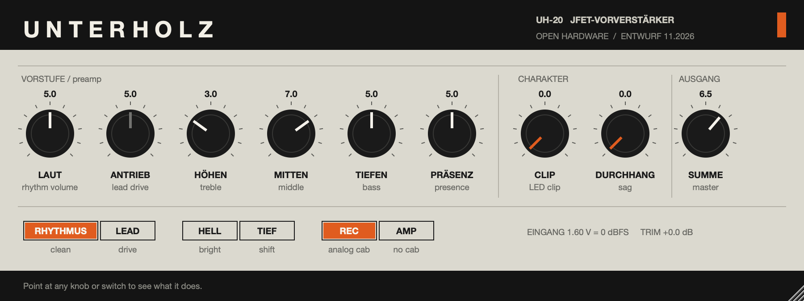

A JFET guitar preamp published as an open circuit, with a plugin that simulates that circuit part by part. Clean channel: glassy, studio-preamp style. Lead channel: Marshall-style crunch to saturation. Both drive a class AB power section (a J201 long-tailed pair into an LM3886) whose feedback carries Presence and whose supply resistance is Sag.
Download (VST3 / AU / CLAP / app)On a Mac with Homebrew:
brew tap clayshentrup/tap
brew trust clayshentrup/tap
brew install --cask unterholz-uh20The installer package asks for your Mac password.
Source and schematicsSAMPLES
One guitar part, the lead from Broken Ladder's the puzzle remains (a Gretsch Duo Jet, recorded straight in), through the UH-20 at ten settings, REC output. Light compression after the amp (at most 3 dB) and level matching, nothing else. The first is the setting on the record.
- 01Rhythm volume 5, treble 3, middle 7, bass 5, presence 6, master 6.5 (the puzzle remains)
- 02Rhythm volume 3, treble 5, middle 6, bass 4, presence 5, master 6.5, bright
- 03Rhythm volume 7, treble 4, middle 7, bass 5, presence 6, master 7.5
- 04Rhythm volume 8, treble 4, middle 7, bass 5, presence 6, master 8, sag 7
- 05Rhythm volume 6, treble 4, middle 7, bass 5, presence 6, master 7, clip 5
- 06Lead drive 3, treble 5, middle 6, bass 5, presence 5, master 6.5
- 07Lead drive 5, treble 5, middle 6, bass 5, presence 5, master 6.5
- 08Lead drive 7, treble 5, middle 7, bass 4, presence 6, master 6.5, clip 4
- 09Lead drive 9, treble 6, middle 6, bass 5, presence 7, master 7, sag 5
- 10Lead drive 6, treble 6, middle 5, bass 6, presence 5, master 6.5, bass shift